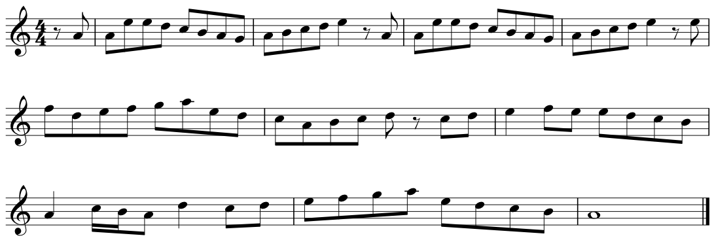
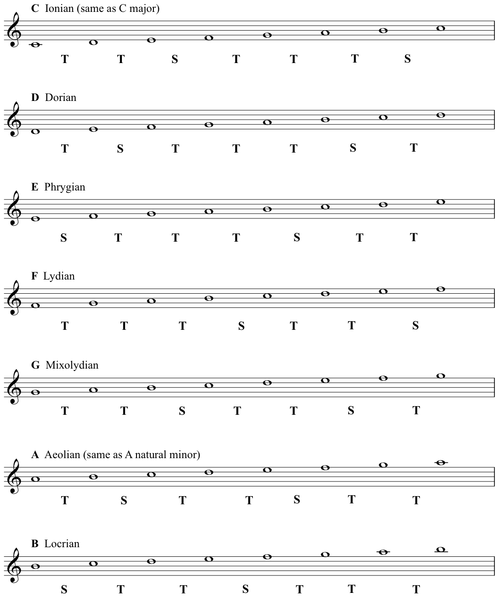

When the pattern of tones and semitones is different, the scale sounds different - formally it has a different quality.
Here is an example of that different quality. This is God Rest Ye Merry Gentlemen, the Christmas Carol that I played on flute, (written by an unknown composer, but probably dating back to the Seventeenth Century).
If you are new to reading notation don’t worry, you can still follow the notes of this tune - and notice how the melody keeps coming back to the A.
We also named the A natural minor the Aeolian mode - we will now move on to the modes. Different modes are simply found by starting our major scale on a different note- this then arithmetically rearranges the pattern of those 5 tones and 2 semitones- the following modes are all therefore also diatonic.
Here are the names as we refer to them today: The Seven Diatonic Modes (showing the patterns of tones and semitones)
